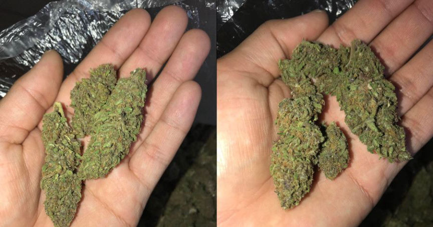
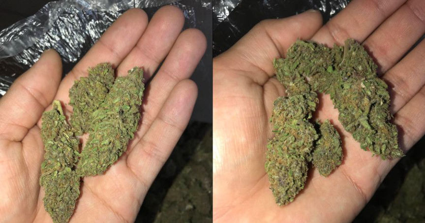

Feds Can Use Pictures of Your Hands to Catch You
~3 min read | Published on 2019-06-18, tagged General-News using 689 words.
Jose Robert Porras III, a convicted felon and former darkweb vendor, pleaded guilty to distributing controlled substances and possessing a firearm as a convicted felon. Porras sold drugs on Dream Market and Wallstreet Market under the names “Canna_Bars” and “TheFastPlug.”
Updated on May 12, 2022, to include information about a more recent case with a similar tactic used by law enforcement.
The notable part of the case involves the way the feds identified Porras. Porras uploaded pictures of his products (marijuana) that included his hand. Investigators analysed the pictures for fingerprints. They searched their fingerprint records and found a match.
Federal law enforcement investigated Porras as part of Operation Dark Gold, the first nationwide investigation into more than 35 darkweb vendors on various marketplaces.
Jose Robert Porras III, 21, and Pasia Vue, 23, both of Sacramento, were charged with drug distribution, money laundering, and illegally possessing firearms, in a 16-count indictment returned by a grand jury in the Eastern District of California. According to the indictment, Porras and Vue were using the online monikers “Cannabars” and “TheFastPlug,” to distribute marijuana, Xanax, and methamphetamine on various dark web marketplaces, including Trade Route, Wall Street Market, and Dream Marketplace. Porras and Vue then laundered the Bitcoin proceeds of their drug distribution through the HSI undercover agent located in New York. After receiving the Bitcoin from Porras and Vue, the undercover agent mailed parcels of cash to them in Sacramento. HSI and USPIS agents seized nine weapons including an AK-47 magazine and ammunition, 30 pounds of marijuana, $10,000 in U.S. currency, a vehicle, and over 100 bars of Xanax.

The investigation into Porras involved some fairly unique tactics, such as the analysis of pictures posted online under the vendor identity Canna_Bars. Porras had uploaded pictures of marijuana as advertisements for potential customers. The pictures often included Porras’ fingerprints. And since he had one felony conviction for possession/purchase for sale of narcotics, law enforcement already had his fingerprints on file. The investigator working the case sent high quality copies of the pictures to the Homeland Security Investigations Document Laboratory (FDL). On March 20, 2018, the analysts at FDL sent the investigator a report that included their findings: the fingerprints in the pictures matched the fingerprints on file for Porras.
This happened again, recently, when police in the United Kingdom obtained a picture of a drug dealer’s hand. The dealer had sent the picture to a contact through Encrochat, a defunct encrypted communication platform. When he sent the picture, he was unaware that police had hacked Encrochat and taken control of Encrochat’s servers earlier that year.
Police analyzed the hacked picture which led them to a Liverpool resident named Carl Stewart. After his arrest, Stewart pleaded guilty to drug charges and was later sentenced to 13 years in prison.
Here is an archived version of the fingerprint photographs: archive.org
Later in March, the investigator received documents from cryptocurrency exchanges that he had requested in connection with the case. He had been searching exchanges for accounts under known names and aliases of Porras and his associates. At least one exchange returned a hit on Porras, an alleged co-conspirator, and the alleged co-conspirator’s brother.
The final stages of the investigation included undercover purchases of marijuana from Porras’ accounts on both Wallstreet Market and Dream Market. Law enforcement eventually observed Porras and an alleged co-conspirator drop packages off at a Post Office that matched orders placed by undercver law enforcement officers.
On May 22, 2018, investigators searched a storage unit held by Porras and found numerous firearms, including a D&D Sales Model A uzi-style firearm, a Norinco MAK 90 Sporter rifle, and a Smith and Wesson .44 caliber revolver.
This case was the product of an investigation by the Northern California Illicit Digital Economy Task Force (NCIDE), comprised of agents from Homeland Security Investigations (HSI), the Federal Bureau of Investigation, the U.S. Postal Inspection Service, and the Drug Enforcement Administration. The NCIDE Task Force is a joint, federal task force focused on targeting all forms of dark-web and cryptocurrency activity in the Eastern District of California. The NCIDE is the task force now known for launching their own hidden service with a list of arrested darkweb vendors.
Source: DOJ
Updated on May 12, 2022, to include information about a more recent case with a similar tactic used by law enforcement.
The notable part of the case involves the way the feds identified Porras. Porras uploaded pictures of his products (marijuana) that included his hand. Investigators analysed the pictures for fingerprints. They searched their fingerprint records and found a match.
Federal law enforcement investigated Porras as part of Operation Dark Gold, the first nationwide investigation into more than 35 darkweb vendors on various marketplaces.
Jose Robert Porras III, 21, and Pasia Vue, 23, both of Sacramento, were charged with drug distribution, money laundering, and illegally possessing firearms, in a 16-count indictment returned by a grand jury in the Eastern District of California. According to the indictment, Porras and Vue were using the online monikers “Cannabars” and “TheFastPlug,” to distribute marijuana, Xanax, and methamphetamine on various dark web marketplaces, including Trade Route, Wall Street Market, and Dream Marketplace. Porras and Vue then laundered the Bitcoin proceeds of their drug distribution through the HSI undercover agent located in New York. After receiving the Bitcoin from Porras and Vue, the undercover agent mailed parcels of cash to them in Sacramento. HSI and USPIS agents seized nine weapons including an AK-47 magazine and ammunition, 30 pounds of marijuana, $10,000 in U.S. currency, a vehicle, and over 100 bars of Xanax.

Canna_Bars Fingerprints
The investigation into Porras involved some fairly unique tactics, such as the analysis of pictures posted online under the vendor identity Canna_Bars. Porras had uploaded pictures of marijuana as advertisements for potential customers. The pictures often included Porras’ fingerprints. And since he had one felony conviction for possession/purchase for sale of narcotics, law enforcement already had his fingerprints on file. The investigator working the case sent high quality copies of the pictures to the Homeland Security Investigations Document Laboratory (FDL). On March 20, 2018, the analysts at FDL sent the investigator a report that included their findings: the fingerprints in the pictures matched the fingerprints on file for Porras.
This happened again, recently, when police in the United Kingdom obtained a picture of a drug dealer’s hand. The dealer had sent the picture to a contact through Encrochat, a defunct encrypted communication platform. When he sent the picture, he was unaware that police had hacked Encrochat and taken control of Encrochat’s servers earlier that year.
Police analyzed the hacked picture which led them to a Liverpool resident named Carl Stewart. After his arrest, Stewart pleaded guilty to drug charges and was later sentenced to 13 years in prison.
Here is an archived version of the fingerprint photographs: archive.org
Later in March, the investigator received documents from cryptocurrency exchanges that he had requested in connection with the case. He had been searching exchanges for accounts under known names and aliases of Porras and his associates. At least one exchange returned a hit on Porras, an alleged co-conspirator, and the alleged co-conspirator’s brother.
The final stages of the investigation included undercover purchases of marijuana from Porras’ accounts on both Wallstreet Market and Dream Market. Law enforcement eventually observed Porras and an alleged co-conspirator drop packages off at a Post Office that matched orders placed by undercver law enforcement officers.
On May 22, 2018, investigators searched a storage unit held by Porras and found numerous firearms, including a D&D Sales Model A uzi-style firearm, a Norinco MAK 90 Sporter rifle, and a Smith and Wesson .44 caliber revolver.
This case was the product of an investigation by the Northern California Illicit Digital Economy Task Force (NCIDE), comprised of agents from Homeland Security Investigations (HSI), the Federal Bureau of Investigation, the U.S. Postal Inspection Service, and the Drug Enforcement Administration. The NCIDE Task Force is a joint, federal task force focused on targeting all forms of dark-web and cryptocurrency activity in the Eastern District of California. The NCIDE is the task force now known for launching their own hidden service with a list of arrested darkweb vendors.
Source: DOJ